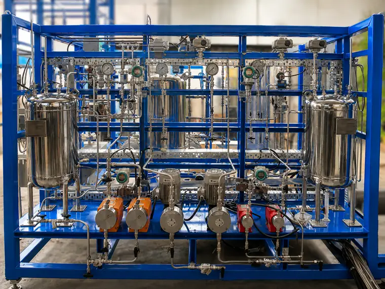

Récupération du solvant méthanol-eau

Un système de récupération construit en deux parties : un skid de procédé et une tour de distillation avec plateformes et accès d’entretien. Un deuxième projet a suivi avec le même client.
Lire l’étude de casProjets · Portfolio de projets
Une sélection de projets, des skids pilotes et systèmes de recherche à l’automatisation d’usines entières et aux déploiements de PlantON™. Les noms des clients ne sont pas divulgués; références sur demande.

Portfolio de projets
Filtrez par solution. Les projets ayant une étude de cas complète comportent un lien vers celle-ci.
Un système de récupération construit en deux parties : un skid de procédé et une tour de distillation avec plateformes et accès d’entretien. Un deuxième projet a suivi avec le même client.
Lire l’étude de cas
Skids d’analyse intégrés mesurant la qualité de vapeur, la pression, la température et la densité, avec contrôle ControlLogix redondant, liens au DCS Honeywell et réglage à distance. Développés conjointement avec des entreprises mondiales de l’énergie et des procédés.
Lire l’étude de cas
Un système conforme à 21 CFR Part 11 avec séquences ISA-88, modules PlantPAx et liens OPC UA au DCS existant. URS, FDS, FAT et SAT. 900+ E/S.
Lire l’étude de cas
12+ systèmes de contrôle sur une plateforme, avec traçabilité de la réception du lait cru à l’expédition et rapports automatisés sur les utilités et la NEP (CIP).
Lire l’étude de casFormulation automatisée avec 26 VFD et 4 agitateurs, recettes ISA-88, piste d’audit sans papier et suivi IoT. Rockwell, 1 000+ E/S.
Lire l’étude de cas
Un skid d’extraction en acier inoxydable à plusieurs niveaux, avec cuves, récipients de collecte, instrumentation pour zones dangereuses et panneau de commande intégré.
Lire l’étude de cas
Skid pilote clé en main pour la lixiviation de masse noire, la séparation et la cristallisation, avec contrôle Siemens S7-1500, 120 E/S et rapports de lots IoT.
Lire l’étude de cas
Captage cryogénique en deux étapes avec désublimation du CO₂, séparation solide-liquide, liquéfaction et récupération de solvants. Siemens S7-1500, 225 E/S, verrouillages de sécurité.
Lire l’étude de cas
Purification de mélanges gazeux sous température et pression contrôlées, instrumentée pour l’exploitation expérimentale et la collecte de données.
Lire l’étude de casUn skid entièrement automatisé sans opérateur en zone dangereuse classifiée, conforme à 21 CFR Part 11, avec contrôle avancé de séparation des phases.
Lire l’étude de casMachines anciennes et données ERP reliées dans une seule vue de la performance de l’usine, sans remplacement des équipements.
Lire l’étude de casParamètres critiques déterminés avec les équipes d’exploitation, capteurs supplémentaires ajoutés et PlantON™ reliant les conditions de procédé à la consommation de produits chimiques et à la qualité.
Lire l’étude de casUn banc de 1 TPD qui produit du peroxyde d’hydrogène pour le traitement de l’eau par oxydation avancée : ingénierie de base, fourniture, installation et mise en service, réalisées par l’intermédiaire d’un partenaire régional.
Conception et fourniture d’un prototype d’ensemble d’élimination du CO₂ avec colonne d’adsorption à zéolite, lit dessiccant et circuit de refroidissement. Ingénierie de base et nomenclature approuvées; plans de fabrication en cours d’examen.
Ingénierie de base des systèmes auxiliaires autour d’un réacteur de pyrolyse du méthane pour l’hydrogène et le carbone solide : PFD et limites de batterie, alimentation et utilités, manipulation des produits et philosophie de contrôle des évents, purges et verrouillages.
Automatisation du réacteur et définition d’ingénierie d’un système de recherche instrumenté sur les terres rares.
8+ projets de recherche en Arabie saoudite depuis 2024, du recyclage des batteries et du captage du carbone à un dossier d’ingénierie pour un banc d’essai d’eau.

Une unité pilote de distillation avec colonne, rebouilleur, condenseur et refroidisseurs, conçue pour des campagnes flexibles de recherche sur les polymères.
Étapes d’absorption et de régénération avec séquençage automatisé, afin que l’équipe de recherche puisse se concentrer sur la performance plutôt que sur la coordination manuelle.
Lire l’étude de casUnité pilote de synthèse de membranes et de séparation des gaz avec réacteurs à lit fixe, bilan de matière en temps réel et rapports automatisés. Siemens S7-1500, 500 E/S, WinCC.
Lire l’étude de casUn montage de réacteur à millicanaux pour un centre de recherche en raffinerie, conçu et fourni dans le cadre d’un appel d’offres public.
Une usine pilote chimique spécialisée avec contrôle de procédé supercritique et boucles en cascade, respectant une spécification de pureté ≥99 %.
Lire l’étude de casContrôle du courant, de la tension, de la pression différentielle et du débit dans les empilements d’électrolyse, avec verrouillages de sécurité et enregistrement de données. PLC Schneider, SCADA AVEVA, 400+ E/S.
Eau, vapeur et surchauffe, section d’essai SOEC/PCEC et conditionnement du H₂ / O₂, avec contrôle du débit massique, verrouillages, extinction d’incendie et acquisition de données par PLC.
Ingénierie de systèmes de procédé pour la conversion du méthane à haute température : confinement, manipulation des gaz, collecte du carbone solide, utilités et verrouillages.
Réacteurs existants de 0,5 à 20 L conservés et automatisés avec contrôle du pH, dosage, température, agitation et PLC/SCADA, prêts pour la mise à l’échelle future.
Exemples anonymisés : dessalement compact, chambres de simulation environnementale, récupération d’eau et de condensats, et unités pilotes chimiques spécialisées.
Formulation, ajout de matières premières, mélange, transferts, remplissage et NEP (CIP) sous un seul système de contrôle des lots selon une structure ISA-88, de l’ingénierie à la mise en service.
Lire l’étude de casÉquipements européens importés de conchage, de raffinage et de tempérage sur un SCADA redondant, avec PlantON™ pour le TRG (OEE) et les utilités entre sites. 3 000+ E/S.
Lire l’étude de casContrôle Honeywell Experion redondant pour la température, la pression, le débit d’hydrogène et les lits catalytiques. 1 200+ E/S.
Visibilité opérationnelle et efforts d’amélioration dans une cellule de production critique.
Un modèle de performance commun pour des machines qui n’ont jamais été conçues pour produire les mêmes rapports, avec agrégation par machine, ligne et quart de travail.
13 machines regroupées sur une même couche de données PlantON™, avec un rapport MIS quotidien et un affichage en atelier.
Unités automatisées de réacteurs continus à cuve agitée avec visibilité PlantON™, dans le cadre d’une relation de longue date dans le secteur pharmaceutique.
Lire l’étude de casLes noms des clients ne sont pas divulgués; références sur demande. Les photos montrent les systèmes réellement livrés lorsqu’elles sont disponibles.
Par étape
La même équipe conçoit chaque étape, afin que les enseignements tirés à l’échelle pilote soient intégrés au système suivant.
Systèmes d’essai d’électrolyseurs, modernisation de réacteurs et bancs spécialisés pour les équipes de recherche.
Voir les projets de rechercheUsines pilotes et de démonstrationUnités pilotes de captage du carbone, de recyclage de batteries, d’hydrogène, de purification et de carburant de propulsion.
Voir la solutionIndustrielRécupération de solvants, extraction, skids d’analyse et skids de procédé d’IPA en production.
Voir la solutionUsines en exploitationAutomatisation de sites existants et de nouveaux sites, et visibilité PlantON™ dans les usines en exploitation.
Voir la solutionGrandissons ensemble